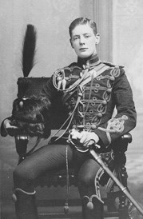
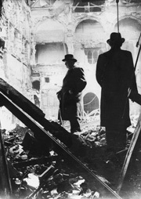

The Winston Churchill Foundation of the United States honors the memory and achievements of the man who was voted the Greatest Briton of all time in a 2002 BBC poll. His reputation is based on his formidable achievements as a world statesman, writer, and orator, most importantly during the Second World War when as Prime Minister he used his great skills to inspire the Great Britain and to mobilize the free world in the fight against tyranny and oppression.
Churchill College at the University of Cambridge was built as the National and Commonwealth memorial to him.
Winston Leonard Spencer Churchill was born at Blenheim Palace on November 30, 1874 and was the elder son of Lord Randolph Churchill and the American beauty, Jennie Jerome. He was a descendant of the illustrious John Churchill, First Duke of Marlborough. A somewhat willful and rebellious child, he was educated at Harrow and at the Royal Military Academy Sandhurst before being commissioned into the army as a cavalry officer in the Fourth Hussars. Churchill was determined to use his military career as a springboard for public life and sought action in Cuba, in the Indian Northwest frontier, and in Sudan. His exploits formed the basis for lucrative newspaper articles and books. In 1899 he failed his first attempt to enter the House of Commons and sought further adventure as a war correspondent during the Boer conflict in South Africa. His capture and subsequent dramatic escape made him a household name and guaranteed his election as Conservative MP for Oldham in 1900.
Churchill’s early political career was both meteoric and controversial. He broke with the Conservative Party over his support for Free Trade, crossing the floor of the Commons and joining the Liberal Party. Once the Liberals had won power, he rose quickly becoming President of the Board of Trade in 1908, where he became a leading social reformer, introducing trades protection, labor exchange, and unemployment insurance legislation. In 1910 He then became Home Secretary and First Lord of the Admiralty in 1911. In September 1908 he married Clementine Hozier. They were to have five children, four of whom survived into adulthood. Churchill’s fifth child, The Lady Soames, serves as a Trustee of the Winston Churchill Foundation of the United States, as does his grandson Winston Churchill.
The beginning of the First World War found Churchill as First Lord of the Admiralty, in charge of the largest fighting fleet in the world. Appalled at the prospect of British soldiers being stuck in bloody static warfare on the Western Front, where trenches had been dug from the English Channel to the Swiss border, Churchill promoted a plan to break the stalemate by attacking Turkey through the Dardanelles Straits. This plan led to the disastrous and badly led Gallipoli landings, for which he was blamed and removed from office as the scapegoat, the first major setback in his career. His immediate response was to take solace in painting, and then to resign from the Government to command an infantry battalion in the trenches on the Western Front. By the end of the war he was back in Government as David Lloyd George’s Minister for Munitions.
In peacetime, Churchill became Secretary of State for War and then the Colonies, and was involved in reshaping the Middle East in the wake of the end of the Ottoman Empire and in Ireland’s gaining independence. In 1924 he rejoined the Conservative Party and to his great surprise was made Chancellor of the Exchequer. By 1930, however, he was out of office and out of step with mainstream politics over his opposition to Indian self-government. He had long warned of the threat posed by communism and the Soviet Union, but from 1933 onwards he began to highlight the new threat posed by fascism and Hitler’s Germany.
Churchill's warnings initially went unheeded, but in the aftermath of the Munich Crisis of 1938, his predictions were seen to be coming true. When World War II broke out, Churchill was brought back into the government as first Lord of the Admiralty. He became Prime Minister of a National Government on May 10, 1940, the day that Hitler launched his invasion of France, Belgium, and the Netherlands. He was aged 65.
Churchill’s key contribution was, by his oratory and bulldog pugnacity, to inspire the nation and its political and military establishment, with the courage, self-belief and dynamism that enabled Britain to soldier on alone, even though throughout Europe all organized resistance to Nazi rule had come to an end. The challenges that he and the nation faced were enormous, not least during the days of the Battle of Britain and the Blitz, when the might of the Luftwaffe was unleashed against the United Kingdom. He called upon the country to make this “their finest hour” and memorably summed up the role of the Royal Air Force with the words, “Never in the field of human conflict was so much owed by so many to so few.”
He held the nation’s nerve through the initial defeats in Europe, the Middle East, the Far East, and at sea and worked tirelessly to construct and maintain a ‘Grand Alliance’ against Hitler, negotiating with Stalin and developing a special relationship with President Roosevelt and the United States. Gradually the tide was turned, Europe was invaded through Italy and France, and the Japanese forced back in the Far East. Victory had been his aim as Prime Minister, and Victory in Europe (VE Day) was finally achieved after five long years of bitter fighting in May 1945.
After the war, Churchill’s place in history was assured, and he was feted and honored wherever he went. Yet he cannot have expected to lose the general election of 1945, and refused to retire. In 1946 at Fulton, Missouri, he warned of the ‘Iron Curtain’ and the new threat posed by Soviet expansionism. In 1951 he returned as Prime Minister for a second term. Failing health forced him to step down in 1955, though he remained a Member of Parliament until 1964. Throughout his life he supplemented his political earnings with royalties from his many books, and won the Nobel Prize for Literature in 1953. In the same year he became a Knight of the Garter, and in 1963 was awarded Honorary US Citizenship. He died in January 1965 at the age of 90, and was accorded a state funeral, a rare honor.
Sir Winston Churchill is known for his bulldog spirit, his love of cigars, brandy and Pol Roger champagne, somewhat eccentric dress sense, and famous V for Victory salute, but he was also a man with an incredible zest and curiosity for life. He played polo in India at the highest level, he learnt to fly, and he strongly supported technological advancement such as the development of the tank and military aviation. He painted, he traveled, he wrote, he designed the grounds and gardens of his family home Chartwell, and in later life he bred racehorses. Churchill remains one of the greatest iconic figures of the twentieth century.